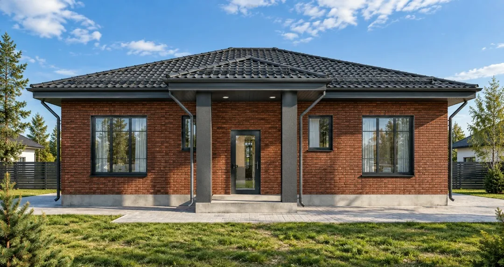

Каркасные дома
Для постоянного проживания и отдыха
Подробнее →Дом целиком или отдельный этап — выберите, с какой задачей обратиться.

Для постоянного проживания и отдыха
Подробнее →
Газобетон, кирпич, керамзитобетон
Подробнее →
Размер и планировку обсудим отдельно
Подробнее →
Свайный, монолитный, ленточный
Подробнее →
Обсудим конструкцию вашей крыши
Подробнее →Укажите место, размеры и желаемый результат. Bal House уточнит детали для расчёта.